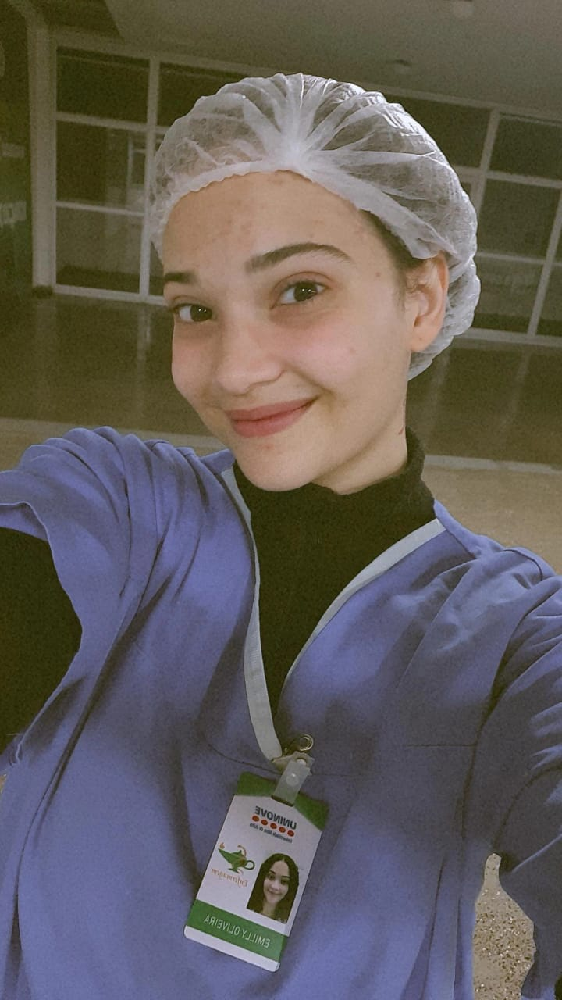
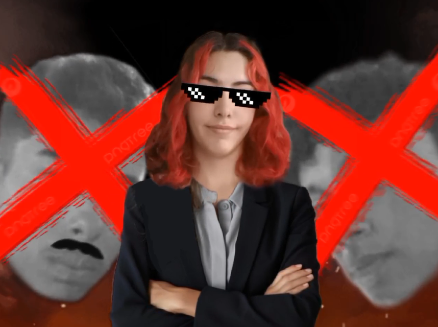

Danilo, após acusar Igor de usurpar seu trono, fez o grupo passar por um rigoroso processo democrático (muita discussão) e foi democraticamente eleito o primeiro presidente dos Classudos da história. Seu mandato foi marcado por todas as vezes em que chamou todo mundo para sair e todos recusaram.
Comitê Presidencial
Lucas
Fundador & Líder Supremo
Beatriz
Grande Chanceler

Emilly
Estagiária
Os Partidos
Seu Partido Aqui
Clique para ver os integrantes
▼Participantes:
- Presidente:
- Vice-Presidente:
Seu Partido Aqui
Clique para ver os integrantes
▼Participantes:
- Presidente:
- Vice-Presidente:
Histórico Presidencial
2024
Danilo - O Primeiro ClasSudo
▼
2025
Juliana - A Era das Mudanças
▼

Juliana, por mais que ninguém se lembre, tinha Danilo como seu vice, mas, sozinha, após uma árdua disputa contra Igor e Davi nas eleições, foi eleita democraticamente a segunda presidente da história dos Classudos, caindo assim em lágrimas de felicidade enquanto recebia seu certificado. Seu mandato foi marcado pela presença, apoio e criatividade ao longo do ano, ao lado de seu amado, criando a primeiríssima edição dos Classudos Awards.
O prazo encerra em 18/01/2026
SE CANDIDATAR